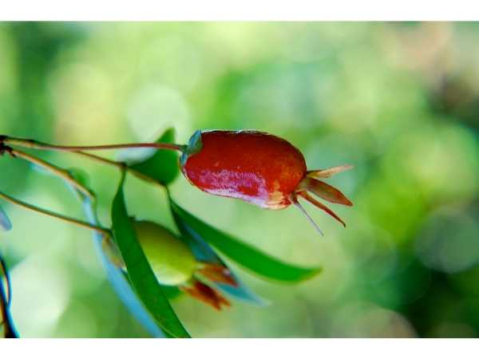

Eugenia punicifolia
Common Names: Savannah Cherry, Cerrado Cherry, Cereja-do-Cerrado
Local Name: Cereja-do-Cerrado (Portuguese)
Family: Myrtaceae
Origin: South America — Brazilian Cerrado, Venezuela, Guyana, Colombia
Plant Type: Perennial evergreen shrub to small tree
Variety: Species type — small sweet cherry-like fruit; extremely hardy and drought-tolerant
Average Lifespan: 20–40 years
| Growth Habit | Compact, multi-stemmed evergreen shrub; adapted to fire-prone savannah ecosystems |
| Plant Size | 1–4 meters tall; spread 1–3 meters |
| Leaves | Opposite, elliptic to lanceolate, 3–6 cm long, leathery, dark green; resemble pomegranate leaves (hence "punicifolia") |
| Flowers | White, 4-petaled, 1–1.5 cm across with prominent stamens; borne singly or in small clusters |
| Flower Characteristics | Fragrant; attract native bees; bloom in spring and after rains |
| Fruit | Small round berry, 1–2 cm diameter; thin skin, sweet juicy flesh |
| Fruit Color | Green turning red to dark red-purple when ripe |
| Seed Characteristics | 1–2 seeds per fruit; round, medium-sized |
| Root System | Deep, extensive root system adapted to dry savannah soils; fire-resistant underground lignotuber |
| Climate | Tropical to subtropical savannah; very drought and heat tolerant |
| Temperature Range | 18–38°C ideal; tolerates brief frost; heat-hardy |
| Rainfall Requirement | 500–1500 mm annually; tolerates seasonal drought |
| Soil Type | Well-drained sandy to laterite soils; tolerates poor, acidic, nutrient-depleted soils |
| Soil pH Preference | 4.5–6.5 (tolerates very acidic soils) |
| Sun Requirement | Full sun; naturally grows in open savannah |
| Spacing | 2–3 meters between plants |
| Irrigation Method | Minimal irrigation needed; very drought-hardy once established |
| Water Requirement | Low; one of the most drought-tolerant Eugenia species |
| Can it Grow in Pots? | Yes, in 15–20 liter pots; compact size suits container growing |
| Fertilizer Schedule | 1–2 times per year; adapted to low-nutrient conditions |
| Recommended Organic Fertilizers | Light compost application; avoid over-fertilizing (adapted to poor soils) |
| Pesticide Frequency | Rarely needed; naturally pest-resistant |
| Recommended Organic Pesticides | Neem oil if needed; generally pest-free |
| Mulching Practice | Light mulch; plant is adapted to exposed conditions |
| Training System | Natural shrub form; minimal training needed |
| Pruning Time | After fruiting; can resprout vigorously after hard pruning |
| How to Prune | Light shaping; remove dead wood; plant resprouts from base after fire or hard pruning |
| Common Pests | Fruit fly (minor), birds |
| Common Diseases | Very disease-resistant; adapted to harsh conditions |
| Disease Prevention & Remedies | Virtually maintenance-free; good drainage is sufficient |
| Flowering Months | Spring to early summer; often after first rains following dry season |
| Fruiting Season | Summer; 3–5 weeks after flowering |
| Days to Harvest | 25–35 days from flowering |
| Harvest Indicators | Fruit turns dark red; softens; sweet flavour develops |
| Average Yield per Plant | 2–8 kg per plant per year |
| Pollination Type | Self-fertile; insect-pollinated |
| Pollination Notes | Native bees are primary pollinators in cerrado habitat |
| Pollination Details | Self-fertile; native bees and insects pollinate effectively |
| Propagation by Seeds | Fresh seeds germinate in 4–8 weeks; seedlings fruit in 3–5 years |
| Propagation by Cuttings | Semi-hardwood cuttings with rooting hormone; moderate success |
| Propagation by Grafting | Can be grafted on compatible Eugenia rootstock |
| Water Usage | Very low; one of the most drought-adapted Eugenia species |
| Soil Conservation Practices | Deep roots stabilize savannah soils; fire-adapted species aids ecosystem recovery |
| Organic Practices Used | Requires virtually no inputs; ideal for sustainable low-input systems |
| Companion Plants | Other cerrado species, native grasses, drought-tolerant ground covers |
| Biodiversity Benefits | Important food source for cerrado wildlife; supports native pollinators; fire-adapted ecosystem species |
| Commercial Production Regions | Brazilian Cerrado region; emerging niche market for native fruits |
| Market Uses | Fresh fruit, native food markets, ornamental plant |
| Processing Uses | Jams, jellies, juice; emerging cerrado superfruit ingredient |
| Market Value (Approx.) | ₹150–400 per kg (niche native fruit market) |
| Symbolism | Symbol of the Brazilian Cerrado biome; represents resilience in harsh conditions |
| Traditional Uses | Fruit gathered by indigenous communities; leaf and bark used in folk medicine for anti-inflammatory and antimicrobial purposes |
| Calories | 35 kcal per 100g (estimated) |
| Dietary Fiber | 1.2 g per 100g |
| Vitamin C | Moderate levels |
| Vitamin A | Present (carotenoids) |
| Iron | Trace amounts |
| Potassium | Present |
| Antioxidants | Phenolic compounds, flavonoids, anthocyanins; high antioxidant capacity |
| Other Key Nutrients | Calcium, phosphorus |
| Anxiety & Sleep | Not a primary medicinal use |
| Immune Support | Antioxidant content supports general health |
| Anti-inflammatory Properties | Leaf extracts show significant anti-inflammatory and antimicrobial activity in studies |
| Heart Health | Phenolic compounds may support cardiovascular health |
| Digestive Health | Leaf tea used in folk medicine for digestive and intestinal complaints |
Disclaimer: Information provided is for educational purposes only and not a substitute for medical advice.
Add your field observations here.